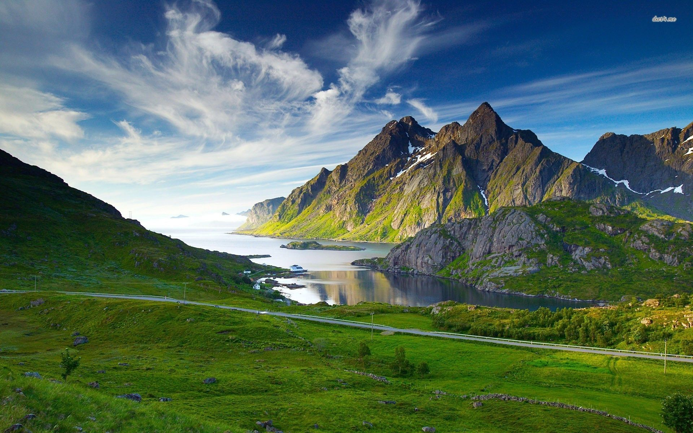

Pages:-
Home
Protfolio
Contact
Blog
Site Report
Nature

-Introduction
What is nature? Nature is an important and integral part of mankind.Essentially, nature is everything we are surrounded by like the water we drink,the air we breathe,the sun we soak in,the birds we hear chirping,beautiful things are itself nature.Nature has been in existence long before humans and ever since bit has taken care of mankind and nourished it forever. In other words, it offers us a protective layer which guards us against all kinds of damages and harms. Survival of mankind without nature is impossible and humans need to understand that. If nature has the ability to protect us, it is also powerful enough to destroy the entire mankind. Every form of nature, for instance, the plants, animals, rivers, mountains, moon, and more holds equal significance for us. Absence of one element is enough to cause a catastrophe in the functioning of human.We fulfill our healthy lifestyle by eating and drinking healthy, which nature gives us. Similarly, it provides us with water and food that enables us to do so. Rainfall and sunshine, the two most important elements to survive are derived from nature itself.
-Roshan Khadka
28-02-2022
@copyright reserved